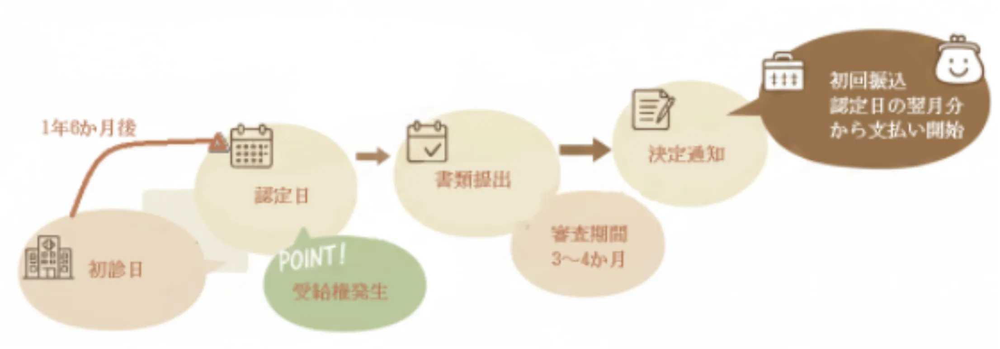

障害年金とは
障害年金は、
病気やけがによって、日常生活や仕事に支障が生じた場合に支給される公的年金制度です。年金というと「老齢年金」を思い浮かべる方が多いかもしれませんが、公的年金制度には、
• 老齢年金
• 遺族年金
• 障害年金
という3つの柱があります。
障害年金は、 「働けなくなった」「生活が不安定になった」ときのために、長期的な生活を支える目的で設けられている制度です。
障害年金は「病名」だけで決まる制度ではありません。
障害年金は、「この病気だから必ずもらえる」「この診断名だからダメ」という
単純な制度ではありません。
実際の判断では、
• 日常生活への影響
• 仕事や社会生活への支障
• 医師の診断内容
• 初診日や保険料の状況
など、複数の要素を総合的に見て判断されます。
そのため、同じ病名であっても「受給できる方」と「難しい方」が分かれることがあります。
障害年金の基本的な3つの要件
障害年金を請求するためには、原則として、次の3つの要件を満たす必要があります。
① 初診日がはっきりしていること
「初診日」とは、今回の障害の原因となった病気やけがで、
初めて医療機関を受診した日をいいます。
• いつ
• どこで
• どのような症状で
受診したかが確認できない場合、障害年金の請求自体が難しくなることがあります。
※ 証明が難しい場合でも、状況によっては検討できるケースがあります。
「数年前、十数年前のことで病院がなくなっている、カルテがない…そんな場合でも、
別の書類で証明できる可能性があります。諦める前に一度ご相談ください。」
② 保険料の納付要件を満たしていること
障害年金は「保険制度」です。
そのため、保険料を一定期間納めていることが必要になります。
原則として、初診日の前日において
• 直近1年間に未納がない
または
• 全期間の3分の2以上を納付（免除含む）している
ことが求められます。
※ 初診日後に慌てて納付しても、要件は満たせません。
③ 障害の状態が一定の基準に該当していること
障害年金には、 障害の重さに応じて 1級・2級・3級 があります。
目安としては、
• 1級：日常生活に常時介助が必要
• 2級：日常生活や社会生活に著しい制限がある
• 3級：労働に著しい制限がある（※厚生年金のみ）
※ 実際の判断は、 診断書の内容や生活状況を踏まえて行われます。
医師に『日常生活で本当に困っていること』を正確に伝えるのは意外と難しいものです。
当事務所では、ヒアリングを通じて診断書作成の際のポイントを整理するお手伝いをします。
請求方法の考え方（認定日請求・事後重症請求）
障害年金には、主に2つの請求方法があります。
認定日請求～過去にさかのぼって受け取れる可能性があります～
初診日から 1年6か月経過した時点で、
障害等級に該当している場合に行う請求です。

• 支給開始のタイミング
-
• 年金事務所に「請求書を提出した日」の翌月分から支給されます。
-
• 過去にさかのぼって受け取ることはできません。
• ここがポイント（注意事項）です
- • 1日でも早く提出することが重要です。請求が1ヶ月遅れると、年金1ヶ月分を受け取れなくなります。
- •【年齢制限あり】原則として、65歳の誕生日の前々日までに請求手続きを完了する必要があります。
- •すでに老齢年金を繰り上げ受給している場合などは、請求できないことがあります。
-
支給開始のタイミング
年金事務所に「請求書を提出した日」の翌月分から支給されます。
過去にさかのぼって受け取ることはできません。
ここがポイント（注意事項）
1日でも早い提出が重要です。 請求が1ヶ月遅れると、年金1ヶ月分を受け取り損ねることになります。
【年齢制限あり】 原則として、65歳の誕生日の前々日までに請求手続きを完了する必要があります。
すでに老齢年金を繰り上げ受給している場合などは、請求できないことがあります。
障害年金の種類と支給額の考え方
初診日に加入していた年金制度によって、請求できる年金の種類が異なります。
国民年金 → 障害基礎年金
厚生年金 → 障害基礎年金＋障害厚生年金
支給額は、
障害等級
加入制度
配偶者・子の加算
などによって変わります。 1.初診日が 自営業・フリーランス・主婦などの方（国民年金）
1級：年額 1,039,625円 ＋ 子の加算
2級：年額 831,700円 ＋ 子の加算
※3級はありません。
2. 初診日が会社員・公務員の方（厚生年金）
1級：国民年金（1級） ＋ 厚生年金 ＋ 配偶者の加算
2級：国民年金（2級） ＋ 厚生年金 ＋ 配偶者の加算
3級：厚生年金のみ（最低保証額 623,800円）
※会社員の方は、1級・2級なら国民年金と厚生年金の両方が受け取れます
※年金額は、令和7年度（2025年度）の金額です。 このページを読んでいただいた方へ
障害年金は、 「条件を一つでも知らないと請求できない」
という制度ではありません。
一方で、早い段階で整理しておいた方がよいポイントが多い制度でもあります。
ご自身やご家族が「対象になるのかどうか分からない」
「何から確認すればいいか迷っている」
という場合は、
まずは状況整理からお手伝いしています。
※年金額は、令和7年度（2025年度）の金額です。 このページを読んでいただいた方へ
障害年金は、 「条件を一つでも知らないと請求できない」
という制度ではありません。
一方で、早い段階で整理しておいた方がよいポイントが多い制度でもあります。
ご自身やご家族が「対象になるのかどうか分からない」
「何から確認すればいいか迷っている」
という場合は、
まずは状況整理からお手伝いしています。
※年金額は、令和7年度（2025年度）の金額です。 このページを読んでいただいた方へ
障害年金は、 「条件を一つでも知らないと請求できない」
という制度ではありません。
一方で、早い段階で整理しておいた方がよいポイントが多い制度でもあります。
ご自身やご家族が「対象になるのかどうか分からない」